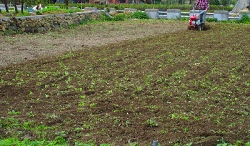
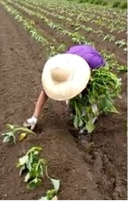
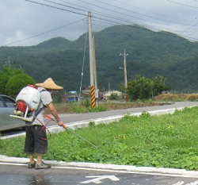
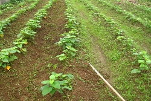
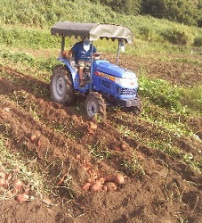
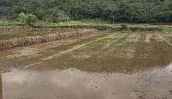
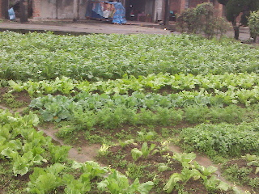

FIELD JOURNAL / 2015 專題紀錄
從整地到休耕，看見農民的一年。
把原專題的栽種紀錄依工序展開，讓每一個步驟都和照片、來源放在一起。
從一株苗，到一籃甘甜
跟著地瓜，一起長大。
先用四幅插畫認識生長，再走進農人的栽種紀錄。
- 01
插苗入土
從一段瓜苗，開始田裡的故事。
閱讀插植紀錄 - 02
枝葉長大
除草、照顧，陪瓜苗一起成長。
閱讀除草紀錄 - 03
地瓜膨大
地底慢慢結成果實，收成前先去蔓。
閱讀去蔓紀錄 - 04
迎接收成
循著藤蔓，挖出土地裡的甘甜。
閱讀採收紀錄
生長過程示意插畫；點選各階段可閱讀原專題工序與實地照片。
金山的土壤與氣候非常適合種植紅心地瓜，但如果只有先天優勢，而沒有農民辛苦的付出，也不會有今天遠近馳名的金山地瓜。他們的努力耕耘與細心照顧，讓我們得以品嘗美味的金山地瓜。現在，就跟著「地瓜金正讚」小隊的腳步，一起看看金山地瓜是怎麼「出生」的吧！
整地
把田裡的水排掉後，先碎土、深耕，減少雜草生長並增加土壤的透氣性；這時也會加入有機堆肥，讓地瓜日後能吸收充足的養分。

圖片來源：金山有蜜農園
作畦
整完地後接著築畦。農民依土壤的特性決定畦的大小，一般高約 30 到 40 公分、寬約 100 公分。
.jpg)
圖片來源：旺旺地瓜園
插植
插植有好幾種手法，金山主要採用斜插法：地瓜藤以四十五度角入土後再往前拖，讓入土的部分呈水平。地瓜藤至少要留五節，入土至少三節，才會結地瓜。苗也很重要：台灣一年十二個月都能種地瓜，但金山受東北季風影響，無法自行育苗，農會會在每年一、二月開專車到中南部向育苗的農民購買，因此全金山的地瓜苗幾乎在同一時間抵達。

圖片來源：旺旺地瓜園
施肥
插植後一到兩個星期施肥，時間要看天氣，因為下雨會讓肥料流失。

圖片來源：金山有蜜農園
除草
再過一到兩個星期除草，方式有手工除草、機器除草，或噴灑農藥。

圖片來源：金山有蜜農園

圖片來源：旺旺地瓜園
第二次施肥之後，地瓜葉長得很快，種下去約一個月就會長得非常茂盛。這段期間，有些撐不過一個月的地瓜苗會枯死，農民會下田巡視、檢查，補上新苗。地瓜葉一茂盛，雜草就長不起來，因為葉子遮住了雜草的光源，自然抑制了雜草生長。前一個月比較辛苦，只要別讓雜草長過地瓜，之後就輕鬆多了，慢慢等待收成。

圖片來源：旺旺地瓜園


去蔓
採收之前必須先清除地瓜藤，方便採收。隨著農業機械化，現在也有機器可以去蔓，加快作業速度。
人工去蔓

機器去蔓

採收
把地瓜從畦中挖出，整理、分級後送到市場販售，或加工成各種食品。

人工採收
機器採收



防治蟲害
金山地瓜的產季大約從七月中到十一月。地瓜一般 90 到 100 天可以收成，金山大約需要 110 天，最晚不超過 150 天，否則會有蟲害，最後腐爛。

浸水
採收後把水放進田裡，主要有兩個功能：一是增加土壤的含水量；二是用水消耗土壤裡的空氣，減少土中的害蟲、抑制牠們繁殖，降低隔年的蟲害。


休耕
把水放掉、田地乾了之後，等到隔年一、二月再開始種地瓜。有些農家也會趁這段時間種些當季蔬菜。


資料來源：旺旺地瓜園園主賴先生專訪｜圖片來源：旺旺地瓜園、金山有蜜農園及小組拍攝